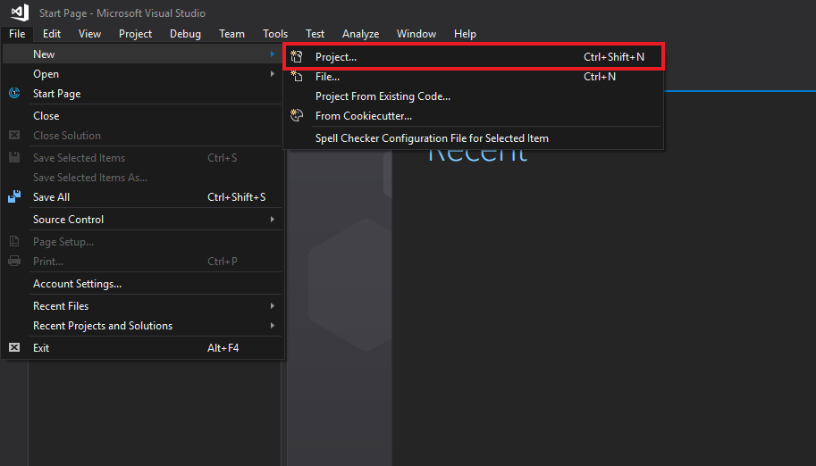
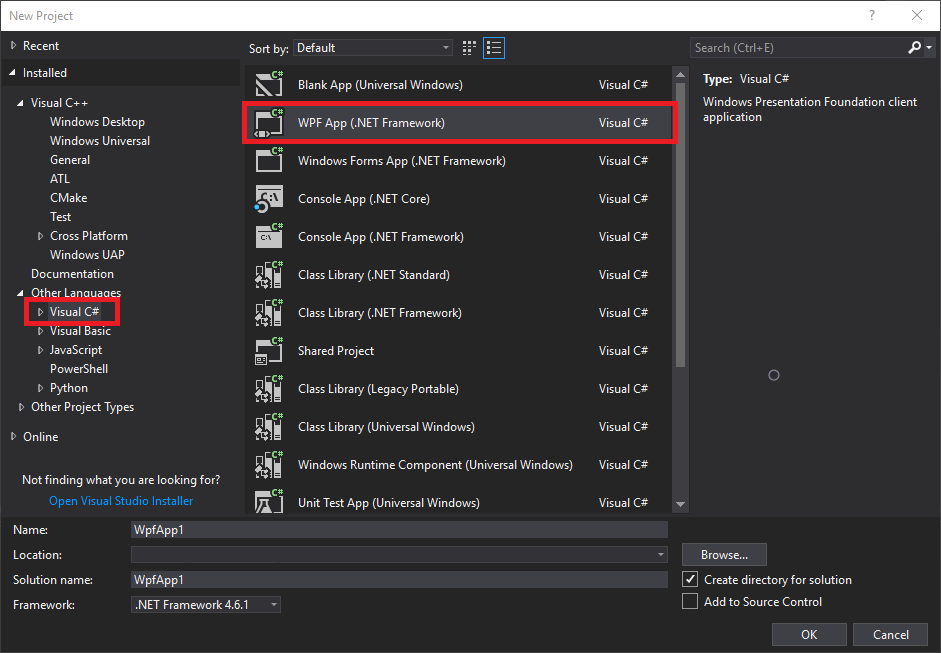
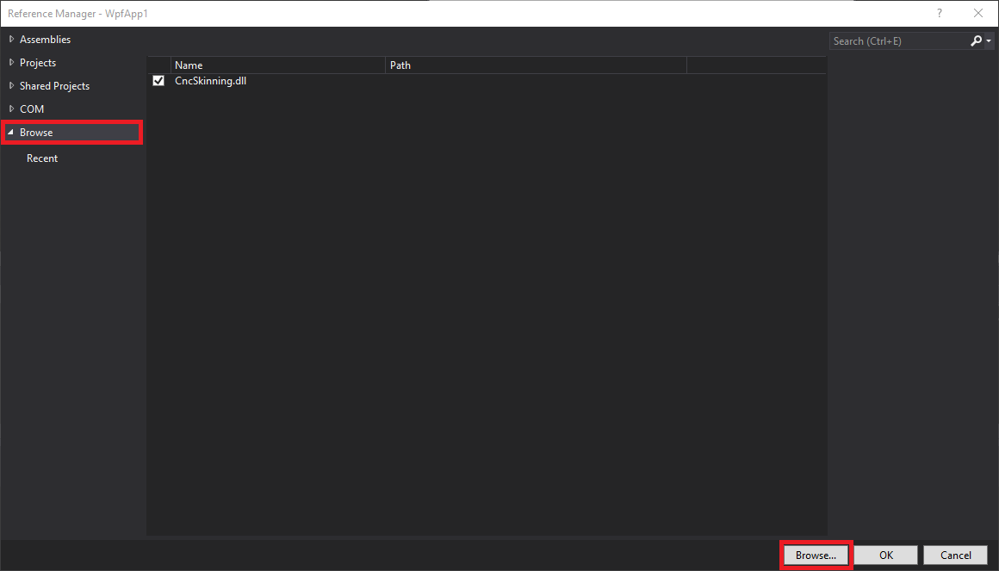
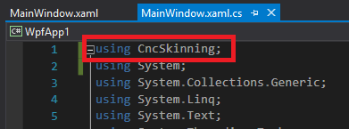
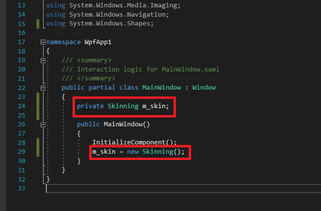

|
Centroid API 1.0.0
Centroid API for C# and VB.Net
|
Loading...
Searching...
No Matches
|
Centroid API 1.0.0
Centroid API for C# and VB.Net
|
You can make your own C# or Visual Basic CNC application using the Centroid API. Follow these steps to get started:
Open Visual Studio.
In the menu bar, select File -> New -> Project....

Select "Visual C#" as your language, and choose "WPF App (.NET Framework)" as your project type.

In the Solution Explorer, under your Wpf project, right click on References and select "Add reference...".

Select "Browse" category, then click "Browse..." and navigate to the location of the "CentroidAPI.dll". It is located in the root directory of your CNC12 installation (cncm, cnct, MillDemo, or LatheDemo folder). Select it, then press OK.

In MainWindow.xaml.cs, write a using command to reference the CentroidAPI.dll

Create a member variable (typically private) called m_skin, and initialize it after the InitializeComponent function is executed.
